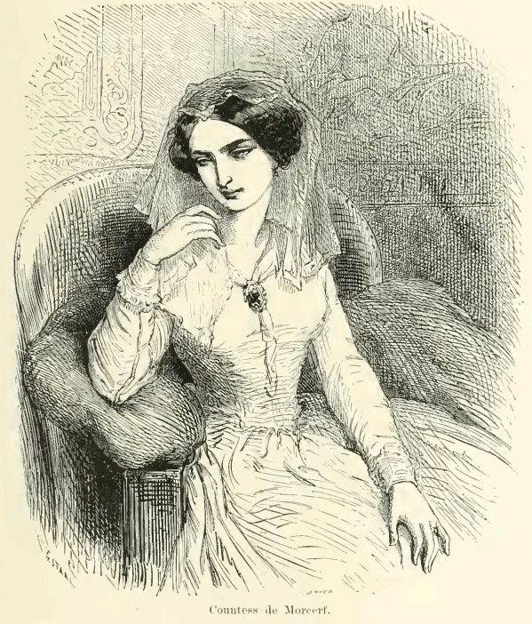
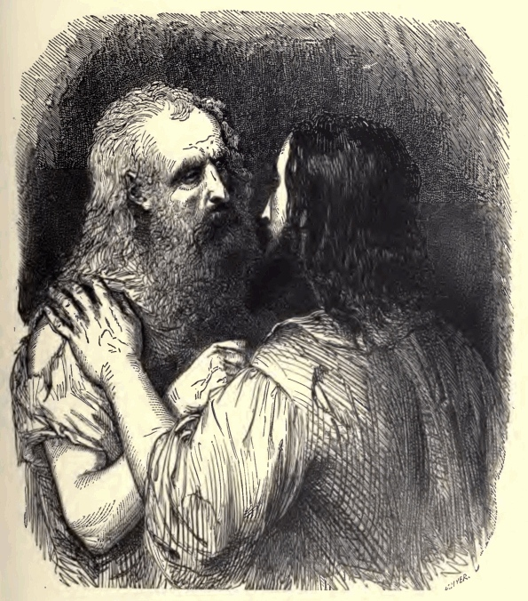
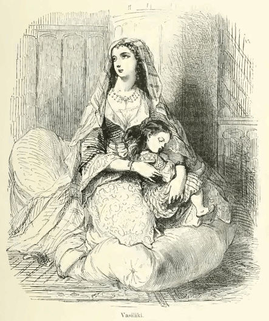
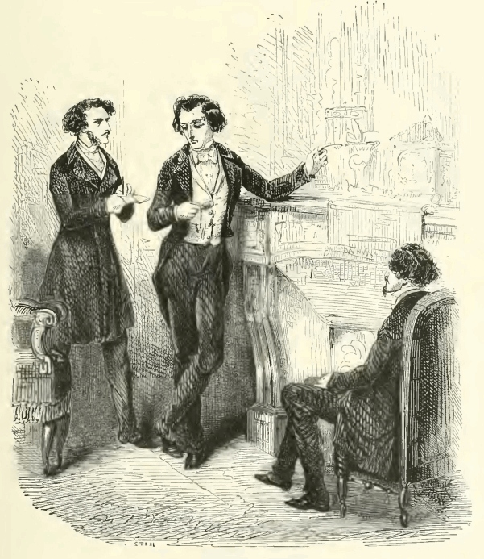
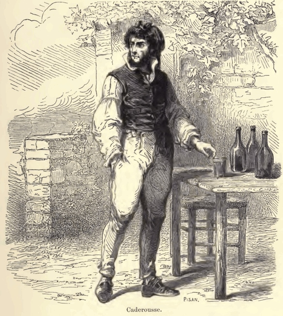
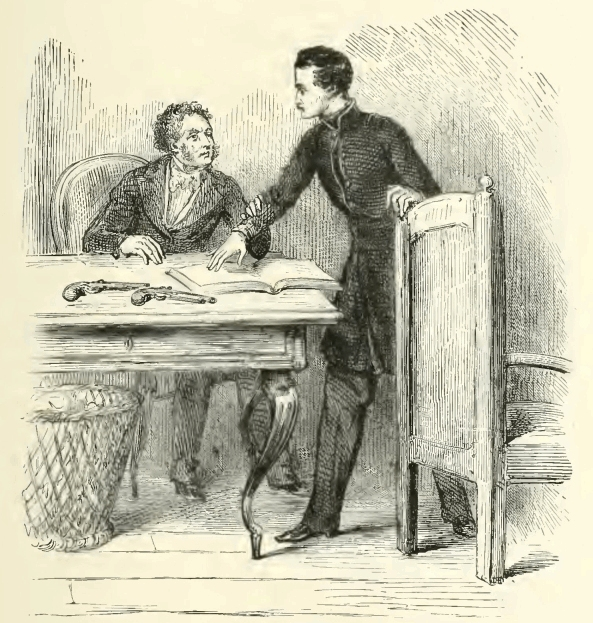
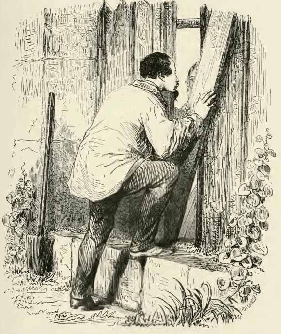
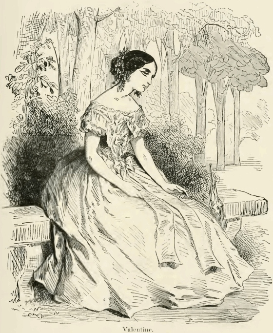
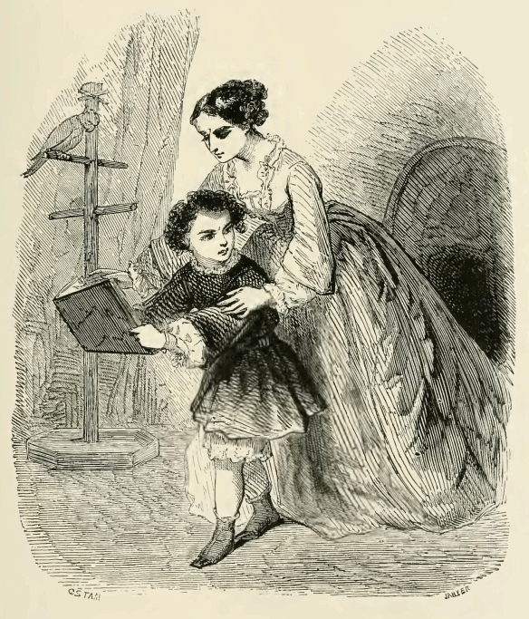
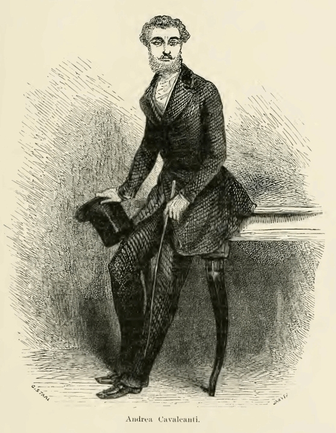

Arquivo 02 · Pessoas e identidades
Os Personagens
Conheça os vínculos do romance e consulte os destinos em cada versão.
Aviso: esta página revela acontecimentos e desfechos da história.
Índice de personagens
Edmond Dantès / Conde de Monte Cristo
 Edmond Dantès — ilustração do romance. Fonte e licença
Edmond Dantès — ilustração do romance. Fonte e licença
Conduz a busca por reparação.
Ler perfil de Edmond Dantès / Conde de Monte Cristo
- Identidade
- Marinheiro; depois, Conde de Monte Cristo.
- Papel na história
- Conduz a busca por reparação.
- Relação com Edmond
- É o próprio Edmond, antes e depois da prisão.
- Características
- Inteligência, perseverança e desejo de controle.
- Destino no livro
- Parte com Haydée após reconhecer limites para sua vingança.
- Destino no filme de 2024
- Parte sozinho e deixa uma carta para Mercédès.
Mercédès

Mercédès, condessa de Morcerf — edição ilustrada. Fonte e licença
Liga o presente do conde ao amor perdido.
Ler perfil de Mercédès
- Identidade
- Noiva de Edmond; depois, esposa de Fernand.
- Papel na história
- Liga o presente do conde ao amor perdido.
- Relação com Edmond
- Antiga noiva; reconhece o homem por trás da nova identidade.
- Características
- Sensibilidade, coragem e cuidado com Albert.
- Destino no livro
- Abandona Fernand e retorna a Marselha.
- Destino no filme de 2024
- Deixa Fernand e recebe a carta de despedida de Edmond.
Fernand Mondego
 Fernand, conde de Morcerf — edição ilustrada. Fonte e licença
Fernand, conde de Morcerf — edição ilustrada. Fonte e licença
Participa da traição e enfrenta a exposição de seu passado.
Ler perfil de Fernand Mondego
- Identidade
- Torna-se conde de Morcerf.
- Papel na história
- Participa da traição e enfrenta a exposição de seu passado.
- Relação com Edmond
- Rival amoroso e um dos responsáveis pela prisão.
- Características
- Ciúme, ambição e preocupação com a honra pública.
- Destino no livro
- Suicida-se após a ruína de sua reputação e a partida da família.
- Destino no filme de 2024
- É vencido em duelo e poupado por Edmond.
Danglars
 Danglars — edição ilustrada. Fonte e licença
Danglars — edição ilustrada. Fonte e licença
Converte inveja e ambição em uma denúncia.
Ler perfil de Danglars
- Identidade
- Funcionário do Pharaon; depois, banqueiro e barão.
- Papel na história
- Converte inveja e ambição em uma denúncia.
- Relação com Edmond
- Conspirador contra Edmond.
- Características
- Ganância e oportunismo.
- Destino no livro
- Perde quase toda a fortuna, mas recebe o perdão de Edmond.
- Destino no filme de 2024
- Perde sua fortuna e o controle de seus bens.
Gérard de Villefort
 Gérard de Villefort — edição ilustrada. Fonte e licença
Gérard de Villefort — edição ilustrada. Fonte e licença
Usa sua autoridade para encobrir segredos.
Ler perfil de Gérard de Villefort
- Identidade
- Magistrado ligado à monarquia.
- Papel na história
- Usa sua autoridade para encobrir segredos.
- Relação com Edmond
- Responsável pelo encarceramento injusto de Edmond.
- Características
- Ambição, cálculo e defesa da própria posição.
- Destino no livro
- Perde a razão após as revelações e a tragédia familiar.
- Destino no filme de 2024
- É morto por André, seu filho.
Abbé Faria

Faria e Edmond — ilustração do romance. Fonte e licença
Educador e portador do segredo do tesouro.
Ler perfil de Abbé Faria
- Identidade
- Abade e companheiro de prisão.
- Papel na história
- Educador e portador do segredo do tesouro.
- Relação com Edmond
- Mentor e amigo de Edmond.
- Características
- Erudição, generosidade e capacidade de observação.
- Destino no livro
- Morre na prisão após uma crise de sua doença.
- Destino no filme de 2024
- Morre após um desabamento no túnel de fuga.
Haydée

Haydée criança e sua mãe, Vasiliki — edição ilustrada. Fonte e licença
Testemunha do passado de Fernand.
Ler perfil de Haydée
- Identidade
- Filha de Ali Pasha de Janina.
- Papel na história
- Testemunha do passado de Fernand.
- Relação com Edmond
- Protegida de Edmond; no romance, torna-se seu amor.
- Características
- Memória, firmeza e afeto.
- Destino no livro
- Parte com Edmond.
- Destino no filme de 2024
- Escolhe uma vida com Albert.
Albert de Morcerf

Cena do capítulo O encontro — edição ilustrada. Fonte e licença
Enfrenta o conflito entre lealdade familiar e verdade.
Ler perfil de Albert de Morcerf
- Identidade
- Filho de Mercédès e Fernand.
- Papel na história
- Enfrenta o conflito entre lealdade familiar e verdade.
- Relação com Edmond
- Aproxima-se do conde sem conhecer sua identidade.
- Características
- Orgulho, impulsividade e capacidade de rever escolhas.
- Destino no livro
- Renuncia ao nome do pai e ingressa no exército.
- Destino no filme de 2024
- Sobrevive ao duelo com Edmond e parte com Haydée.
Caderousse

Caderousse — edição ilustrada. Fonte e licença
Conhece a conspiração, mas não impede a injustiça.
Ler perfil de Caderousse
- Identidade
- Vizinho de Edmond no romance.
- Papel na história
- Conhece a conspiração, mas não impede a injustiça.
- Relação com Edmond
- Antigo conhecido; mistura culpa e interesse.
- Características
- Fraqueza moral e cobiça.
- Destino no livro
- É mortalmente ferido por Benedetto após uma tentativa de roubo.
- Destino no filme de 2024
- Ajuda a capturar a frota de Danglars, colaborando com a reparação.
Monsieur Morrel

Monsieur Morrel e seu filho — edição ilustrada. Fonte e licença
Representa a lealdade em meio à traição.
Ler perfil de Monsieur Morrel
- Identidade
- Armador e proprietário do Pharaon.
- Papel na história
- Representa a lealdade em meio à traição.
- Relação com Edmond
- Patrão e defensor de Edmond.
- Características
- Honestidade, gratidão e senso de responsabilidade.
- Destino no livro
- É salvo da falência por Edmond; sua morte ocorre mais tarde.
- Destino no filme de 2024
- É arruinado por Danglars; o conde retribui sua lealdade por meio de seu neto.
Maximilien Morrel

Maximilien no jardim — edição ilustrada. Fonte e licença
Seu amor por Valentine sustenta um caminho de esperança.
Ler perfil de Maximilien Morrel
- Identidade
- Oficial e filho de Monsieur Morrel no romance.
- Papel na história
- Seu amor por Valentine sustenta um caminho de esperança.
- Relação com Edmond
- Amigo e protegido do conde.
- Características
- Lealdade, bravura e devoção.
- Destino no livro
- Reencontra Valentine e pode construir uma vida com ela.
- Destino no filme de 2024
- Aparece como neto de Morrel; seu romance com Valentine não é desenvolvido.
Valentine de Villefort

Valentine de Villefort — edição ilustrada. Fonte e licença
É ameaçada pelos conflitos de herança da família.
Ler perfil de Valentine de Villefort
- Identidade
- Filha de Gérard de Villefort e Renée de Saint-Méran.
- Papel na história
- É ameaçada pelos conflitos de herança da família.
- Relação com Edmond
- Protegida por Edmond por seu vínculo com Maximilien.
- Características
- Bondade e fidelidade aos afetos.
- Destino no livro
- É salva do envenenamento e se reúne com Maximilien.
- Destino no filme de 2024
- Seu arco não é incluído nesta adaptação.
Héloïse de Villefort

Héloïse e Édouard de Villefort — edição ilustrada. Fonte e licença
Procura favorecer o filho por meio de envenenamentos.
Ler perfil de Héloïse de Villefort
- Identidade
- Segunda esposa de Villefort e mãe de Édouard.
- Papel na história
- Procura favorecer o filho por meio de envenenamentos.
- Relação com Edmond
- Suas ações cruzam o plano do conde contra Villefort.
- Características
- Ambição familiar e dissimulação.
- Destino no livro
- Envenena a si mesma e ao filho Édouard.
- Destino no filme de 2024
- A trama de envenenamentos não é adaptada.
Benedetto / Andrea Cavalcanti

Andrea Cavalcanti / Benedetto — edição ilustrada. Fonte e licença
Expõe um segredo de filiação e uma tentativa de infanticídio.
Ler perfil de Benedetto / Andrea Cavalcanti
- Identidade
- Filho de Villefort e da futura Madame Danglars; falso nobre.
- Papel na história
- Expõe um segredo de filiação e uma tentativa de infanticídio.
- Relação com Edmond
- Instrumento do plano de Edmond no romance.
- Características
- No livro, oportunismo e violência.
- Destino no livro
- É julgado e revela publicamente sua origem.
- Destino no filme de 2024
- Recriado como André: mata Villefort e morre durante a fuga.